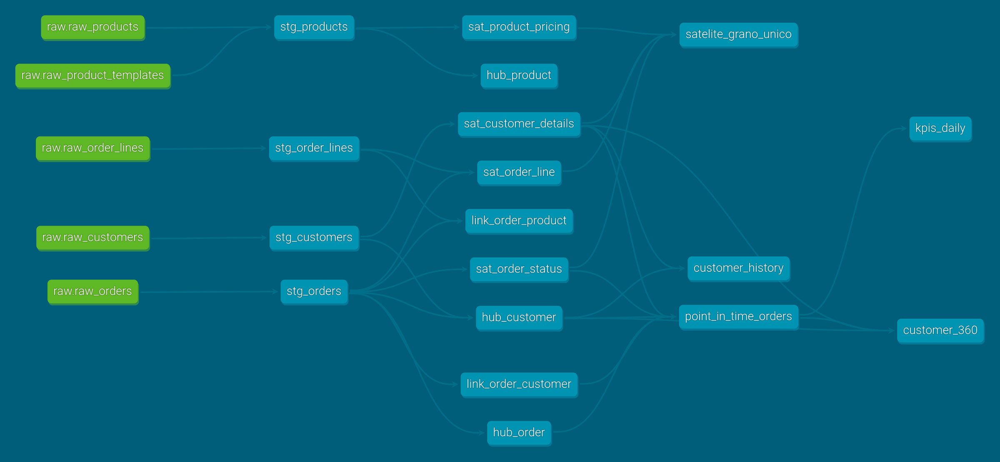
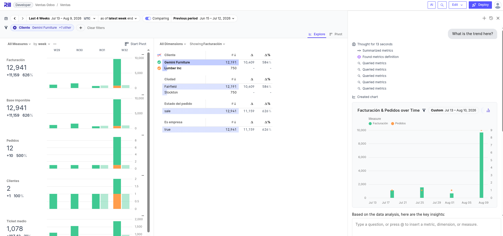

flowchart LR
o[("Odoo<br/>PostgreSQL")] --> d["dlt"]
d --> b[("DuckDB<br/>raw")]
b --> t["dbt"]
t --> v[("DuckDB<br/>vault")]
v --> t2["dbt"]
t2 --> g[("DuckDB<br/>oro")]
g --> r["Rill"]
t2 -.-> doc["dbt docs"]
classDef origen fill:#ececf0,stroke:#868d9c,stroke-width:1.5px,color:#2b2f3a
classDef carga fill:#fae3c8,stroke:#bf7f28,stroke-width:1.5px,color:#573809
classDef almacen fill:#d5e6f5,stroke:#3d7cb0,stroke-width:1.5px,color:#12354e
classDef transformacion fill:#d7eddc,stroke:#4a9463,stroke-width:1.5px,color:#1c4a2e
classDef explotacion fill:#e6ddf5,stroke:#7457bd,stroke-width:1.5px,color:#332757
classDef documentacion fill:#d7eddc,stroke:#4a9463,stroke-width:1.5px,color:#1c4a2e,stroke-dasharray:4 3
class o origen
class d carga
class b,v,g almacen
class t,t2 transformacion
class r explotacion
class doc documentacion
Apéndice D — Ejercicio: un lago de datos entero
El resto del libro construye sobre la secretaría académica, un origen inventado a medida para que cada capítulo pueda enseñar una cosa sin que estorben las demás. Este apéndice propone el ejercicio contrario: partir de un sistema real y llegar hasta el panel, con todo lo que eso trae. El origen es Odoo, un ERP de código abierto con datos de demostración, y la gracia está precisamente en que su base de datos no está diseñada para que la analicemos.
Todo lo necesario está en el repositorio. Basta con este apéndice y los ficheros que se citan para reconstruirlo desde cero, y conviene hacerlo en ese orden, porque cada paso deja algo que el siguiente necesita.
NotaEs un ejercicio aparte
Este montaje no continúa el ejemplo de la academia ni comparte nada con él. Los puertos están elegidos para que ambos puedan convivir en la misma máquina, así que se puede tener el libro renderizando y este lago levantado a la vez.
D.1 Lo que se va a levantar
Seis piezas, todas de código abierto, cada una haciendo exactamente un trabajo.
La flecha de puntos es la única que no lleva datos: dbt docs no transforma nada, se limita a publicar lo que dbt sabe de sus propios modelos.
| Pieza | Papel | Dónde queda |
|---|---|---|
| Odoo 16 y PostgreSQL 15 | Sistema origen con datos de demostración | http://localhost:8069 |
| dlt | Ingesta de Odoo al almacén | pipelines/odoo_extract.py |
| DuckDB | El almacén, las cuatro capas | warehouse/warehouse.duckdb |
| dbt | Data Vault y capa de explotación | dbt_project/ |
| dbt docs | Diccionario de modelos y grafo de linaje | http://localhost:8081 |
| Rill | Panel de exploración | http://localhost:9010 |
Los puertos no son los de costumbre y la razón es evitar choques: el 3000 lo usa Evidence en el capítulo de inteligencia de negocio, el 8585 lo ocupa OpenMetadata en el apéndice de metadatado y el 9009 es el de un Rill arrancado en local como se ve en el apéndice de exploración. Aquí PostgreSQL se publica en el 5433, Rill en el 9010 y la documentación en el 8081 (dbt docs sirve por defecto en el 8080, que es de los puertos más disputados de cualquier portátil).
D.2 Antes de empezar
Hace falta Docker con el complemento compose, unos 4 GiB de memoria libre y unos 3 GiB de disco, casi todo para la imagen de Odoo. La primera ejecución tarda lo que tarde la descarga.
D.3 Puesta en marcha
D.3.1 Levantar el origen
docker compose up -dEsto arranca PostgreSQL, crea la base de datos de Odoo con el módulo de ventas y sus datos de demostración, y deja el ERP escuchando. La creación de la base de datos la hace un servicio de un solo uso (odoo-init) en lugar del asistente web, que es lo que suele proponerse y que tiene el inconveniente de no ser reproducible: obliga a rellenar un formulario a mano y a acordarse de marcar la casilla de los datos de demostración.
El primer arranque tarda un par de minutos en inicializar la base. Se sabe que ha terminado cuando el servicio de inicialización ha salido con código cero:
docker inspect dl-odoo-init --format '{{.State.ExitCode}}'A partir de ahí Odoo responde en http://localhost:8069, con usuario admin y contraseña admin. Merece la pena entrar y mirar los pedidos de venta, aunque solo sea para tener presente cómo se ven los datos antes de que los toquemos.
D.3.2 Cargar la capa bronce
docker compose run --rm extractdlt lee cinco tablas de Odoo y las deja en el esquema raw sin más cambio que el nombre. Al terminar informa de lo cargado, y estos son los números que salen con los datos de demostración:
raw.raw_customers: 40
raw.raw_orders: 20
raw.raw_order_lines: 44
raw.raw_products: 34
raw.raw_product_templates: 29Si esos números no cuadran, no tiene sentido seguir: algo ha fallado en el origen y todo lo que venga después heredará el problema.
D.3.3 Construir el vault
docker compose run --rm transformdbt encadena las tres capas que quedan (staging, vault y explotación) y a continuación ejecuta las pruebas. La salida termina así:
Done. PASS=74 WARN=0 ERROR=0 SKIP=0 TOTAL=74Las setenta y cuatro incluyen diecisiete modelos y cincuenta y siete pruebas. Que pasen todas no significa que el modelo sea bueno, pero que falle una sí significa que algo está mal, y en este proyecto hay pruebas puestas justo donde el Data Vault se rompe con más facilidad.
D.3.4 Las dos cosas de una vez
Los dos pasos anteriores pueden ejecutarse como un solo proceso, porque dlt sabe lanzar un proyecto dbt por su cuenta:
docker compose run --rm pipelineEstá en pipelines/run_pipeline.py y son tres líneas de fondo: se crea el pipeline, se carga y se le pasa el mismo objeto a dlt.dbt.package(), que deduce de él a qué base de datos tiene que apuntar dbt. La dependencia entre cargar y transformar no hay que declararla en ningún sitio, porque si la carga lanza una excepción la línea siguiente no llega a ejecutarse.
Importante
run_all no ejecuta las pruebas
El nombre engaña. run_all() hace dbt deps, dbt seed y dbt run, es decir el equivalente a dbt run y no a dbt build: las pruebas de los modelos no entran. Quedarse ahí dejaría el vault sin sus cincuenta y siete comprobaciones y sin enterarse. Por eso el script pide las pruebas aparte, con transformacion.test(), y suma los dos resultados antes de decidir si ha ido bien.
D.3.5 Ver el linaje
Cada ref() y cada source() del proyecto es una dependencia declarada, así que dbt conoce el grafo entero sin que nadie se lo cuente. Publicarlo como sitio web son dos pasos:
docker compose run --rm transform dbt docs generate
docker compose --profile docs up -d docsEl primero deja en dbt_project/target/ el manifest.json (los modelos y sus dependencias) y el catalog.json (las columnas y los tipos de cada relación, que sí hay que ir a preguntarle a DuckDB). El segundo sirve esos ficheros en http://localhost:8081. El botón azul de la esquina inferior derecha abre el grafo:

Se lee de izquierda a derecha y es exactamente el recorrido que cuenta este apéndice: en verde las cinco tablas de raw que dejó dlt, y en azul las cuatro vistas de staging, los tres hubs, los dos enlaces, los cuatro satélites y las cuatro tablas de explotación. El nodo satelite_grano_unico no es un modelo sino la prueba singular de dbt_project/tests/, porque en el grafo de dbt las pruebas son nodos como cualquier otro: cuelgan de aquello que comprueban, que es justo lo que permite a dbt build ordenar la ejecución sin que nadie escriba las dependencias a mano.
NotaServir no bloquea el almacén, generar sí
dbt docs serve es un servidor de ficheros estáticos: reparte el manifest.json y el catalog.json que ya están en target/ y no abre DuckDB en ningún momento. Por eso este servicio sí convive con Rill, al contrario que extract, transform o pipeline.
Quien sí abre el almacén es dbt docs generate, porque el catálogo de columnas tiene que consultarlo. Con Rill levantado falla con el mismo Conflicting lock is held in PID 0 de siempre, de modo que el orden que funciona es generar la documentación primero y arrancar el panel después.
Las descripciones que aparecen al pinchar un modelo salen de los description: de _core_models.yml y _stg_sources.yml. No hay nada automático en esa parte: lo que no esté escrito ahí sale vacío, y un diccionario de datos sin descripciones es poco más que la lista de columnas que ya da la base de datos.
El límite del grafo se ve mejor con la imagen delante: dbt solo dibuja lo que pasa por sus ref() y sus source(). El tramo de Odoo a raw lo hizo dlt y aquí no existe (las tablas de raw aparecen como el principio del mundo, cuando son la mitad de la historia), y el panel de Rill que consume la capa oro tampoco. Coser los tres tramos es precisamente el trabajo de un catálogo de gobierno, y cómo se reconstruye ese linaje completo a partir del manifest.json de dbt y del esquema que deja dlt está en el apéndice de metadatado.
D.3.6 Explorar
docker compose --profile bi up -d rillEl panel queda en http://localhost:9010. Rill consulta el mismo fichero DuckDB que acaba de construir dbt, sin copiar nada.

AdvertenciaRill bloquea el almacén
DuckDB admite un único escritor sobre el fichero, por las razones que se explican en el capítulo de bases de datos analíticas. Mientras Rill esté levantado, cualquiera de las órdenes que escriben (extract, transform o pipeline) falla con un Conflicting lock is held in PID 0. Ese PID 0 despista, porque el proceso que tiene el bloqueo está en otro contenedor y desde aquí no se le ve el número.
La solución es parar el panel antes de volver a cargar:
docker compose stop rillPor eso Rill vive tras un perfil de Compose y no arranca con el up -d general: el orden natural (cargar, transformar y después explorar) evita el choque. Al terminar de reconstruir, docker compose --profile bi up -d rill lo devuelve a su sitio.
D.3.7 Comprobar que está todo
docker compose run --rm --entrypoint python transform -c "
import duckdb
con = duckdb.connect('/data/warehouse.duckdb', read_only=True)
print(con.execute('SELECT count(*) FROM vault.hub_customer').fetchone())
print(con.execute('SELECT * FROM main.kpis_daily LIMIT 5').fetchall())
"D.4 Lo que ha quedado construido
Cuatro capas en un mismo fichero DuckDB, cada una en su esquema.
| Esquema | Capa | Contenido |
|---|---|---|
raw |
Bronce | Reflejo de Odoo, sin transformar (5 tablas) |
staging |
Preparación | Vistas que resuelven las rarezas del origen (4 vistas) |
vault |
Plata | 3 hubs, 2 enlaces y 4 satélites |
main |
Oro | point_in_time_orders, kpis_daily, customer_360, customer_history |
Que la capa de explotación viva en main y no en un esquema propio llamado analytics no es un descuido. Rill solo sabe direccionar tablas del esquema por defecto de la base de datos que adjunta (sus claves database y database_schema se ignoran con este conector), de modo que una tabla en un esquema analytics resulta invisible para el panel. Las capas de abajo sí van en su esquema porque solo las consume dbt. Es un ejemplo pequeño y muy típico de cómo una limitación de la herramienta de consumo acaba decidiendo dónde se materializa el dato.
D.5 Las decisiones que importan
Cuatro cosas de este montaje merecen explicación, porque son las que separan un Data Vault que funciona de uno que parece funcionar.
D.5.1 El hub se carga desde todos los orígenes
Un hub guarda claves de negocio. La tentación es sacarlas de la tabla que “es” esa entidad (los clientes, de la tabla de clientes) y ya está. Pero un pedido también nombra a un cliente, y si esa clave no estaba en la lista de contactos que hemos filtrado, el enlace apunta a un hub donde no existe y el vault queda roto.
Aquí hub_customer se carga de dos sitios a la vez:
WITH fuente AS (
SELECT customer_id FROM {{ ref('stg_customers') }}
UNION
SELECT customer_id FROM {{ ref('stg_orders') }}
)Esto no es una precaución teórica. Al construir el ejercicio, el filtro customer_rank > 0 en staging dejaba fuera a los tres clientes que tienen pedidos, y la prueba relationships del enlace saltó con quince filas huérfanas. La razón es de las que solo se aprenden mirando: Odoo incrementa ese contador desde el flujo de su interfaz, no desde la base de datos, así que los datos de demostración (que se cargan como fixtures XML) lo dejan a cero incluso para quien tiene pedidos confirmados.
De ahí la regla, que conviene llevarse escrita: un filtro de negocio no puede decidir qué claves existen.
D.5.2 Los satélites no se cierran, se deducen
Casi toda la literatura describe el satélite con una columna dv_end_date que se rellena cuando el atributo cambia, y con NULL para la versión vigente. Es fácil de explicar y es una mala idea de implementar, porque cerrar una fila exige un UPDATE sobre el histórico, que es justo lo que un vault no debe hacer nunca.
Aquí los satélites son de solo inserción. En cada carga se calcula la huella (hashdiff) de los atributos y solo se escribe si difiere de la última guardada para esa clave. La vigencia y el intervalo de validez se calculan al consultar, con una función de ventana:
lead(s.load_date) OVER (
PARTITION BY s.hk_customer
ORDER BY s.load_date
) AS dv_end_dateSi hay una carga posterior, esa es la fecha en la que la versión dejó de ser cierta. Si no la hay, la versión sigue vigente y el cierre queda a NULL. El resultado es el mismo que promete la teoría, y el histórico no se toca jamás. Está en el modelo customer_history.
D.5.3 El enlace no lleva atributos
Un enlace guarda la relación y las claves de los hubs que une. Nada más. Meter la cantidad de la línea dentro del enlace pedido-producto, que es lo primero que uno hace, rompe por dos sitios: un mismo producto puede aparecer en dos líneas del mismo pedido (con lo que el par deja de ser único) y la cantidad es un atributo descriptivo, que en Data Vault va siempre en un satélite.
La solución del ejercicio es tomar la línea de pedido como grano del enlace, conservar su identificador como clave degenerada y colgar del enlace un satélite (sat_order_line) con cantidades y precios.
D.5.4 El modelo físico de un ERP no es el que enseña
Esta es la lección que justifica usar Odoo en lugar de un origen de juguete. Lo que la interfaz presenta como un producto con su nombre y su precio, por debajo es otra cosa:
product_productno tiene nombre ni precio. Son campos de la plantilla (product_template), y hay que ir a buscarlos con unjoin.product_template.nameesjsonb, porque desde Odoo 16 los campos traducibles se guardan como un diccionario de idiomas. Hay que extraerlo conjson_extract_string(name, '$.en_US').standard_priceno existe como columna. Vive enir_property, porque depende de la compañía. Cualquier cálculo de margen tiene que ir allí.
Todo esto se resuelve en stg_products.sql, que es exactamente para lo que sirve la capa de staging: absorber la rareza del origen una sola vez para que no se propague al resto.
D.6 Ejercicios
D.6.1 Ver el historial en funcionamiento
Con una sola carga cada cliente tiene una única versión y el histórico no se aprecia. Hay que cambiar algo y volver a pasar el pipeline:
docker exec dl-postgres psql -U odoo -d odoo_demo \
-c "UPDATE res_partner SET city='Bilbao' WHERE id=11;"
docker compose stop rill
docker compose run --rm extract
docker compose run --rm transformEl satélite pasa de cuarenta filas a cuarenta y una (no a ochenta: solo se escribe lo que cambió) y customer_history muestra la versión antigua cerrada con la fecha de la carga nueva y la nueva abierta. La consulta:
SELECT customer_name, city, dv_start_date, dv_end_date, es_version_vigente
FROM main.customer_history WHERE customer_id = 11 ORDER BY dv_start_date;Conviene ejecutar transform una tercera vez sin tocar nada y comprobar que no aparece ninguna fila nueva. Si aparece, la detección por huella está mal y el histórico se llenaría de duplicados a cada carga.
D.6.2 Romper la integridad a propósito
Merece la pena ver fallar la prueba que protege el vault, y el ejercicio enseña más de lo que parece porque hacen falta dos cambios, no uno.
El primero es el filtro que parecía inofensivo, en stg_customers.sql:
WHERE id IS NOT NULL
AND customer_rank > 0Con eso solo, todo sigue pasando. El hub se carga de dos orígenes, así que las claves que el filtro deja fuera entran igualmente por la puerta de los pedidos. Para romperlo hay que quitar además esa segunda fuente en hub_customer.sql, dejando el hub alimentado únicamente por la lista de contactos:
WITH fuente AS (
SELECT DISTINCT customer_id FROM {{ ref('stg_customers') }}
),Y hay un tercer detalle. Los hubs son de solo inserción, de modo que las claves cargadas en ejecuciones anteriores siguen ahí y tapan el problema. Hay que reconstruir desde cero:
docker compose run --rm transform dbt build --full-refreshAhora sí: Got 15 results, la prueba relationships del enlace falla y el proceso termina con código distinto de cero. Esas quince filas son pedidos que apuntan a un cliente que no existe en el hub.
La conclusión es la que interesa: el filtro por sí solo no era el fallo, y la carga multiorigen del hub no era una precaución decorativa. Cada uno tapaba al otro, y solo quitando los dos aparece el problema. Para volver atrás, basta con deshacer ambos cambios y repetir el --full-refresh.
D.6.3 Añadir un origen
Odoo tiene facturas (account_move y account_move_line). Añadirlas es el recorrido completo: declararlas en ODOO_TABLES del pipeline, crear su modelo de staging, decidir si la factura es un hub nuevo o un satélite del pedido (pista: tiene identidad y vida propias) y llevarla hasta la capa de explotación.
D.7 Lo que hay que vigilar
Las versiones de dbt y su adaptador tienen que ir emparejadas. Si se instala dbt-duckdb sin fijar también dbt-core, pip resuelve el núcleo más nuevo que exista y lo empareja con un adaptador viejo. Esa combinación arranca, avisa de que el plugin está desactualizado y luego se cae de forma intermitente, que es la peor manera de fallar. Las versiones van fijadas en docker/toolbox.Dockerfile.
DuckDB escribe con un solo proceso. Además de lo ya dicho sobre Rill, el proyecto usa un único hilo de dbt (threads: 1). Subirlo no acelera nada y provoca caídas cuando varios modelos escriben a la vez.
El directorio warehouse/ tiene que existir antes del primer arranque. Si no está, Docker lo crea como root y los contenedores, que corren con el usuario del anfitrión, no pueden escribir. En el repositorio va un .gitkeep para que exista siempre.
D.8 Lo que este ejercicio deja fuera
Por mantenerlo reproducible en un portátil, tres piezas se han quedado a la puerta.
El catálogo. OpenMetadata pide alrededor de 6 GiB solo para él y ya tiene su propio apéndice, con su despliegue y su puerto. Conectarlo a este almacén es un buen ejercicio adicional. Lo que queda montado con dbt docs cubre una parte pequeña de eso: el linaje de lo que ocurre dentro de dbt y el diccionario de los modelos, sin glosario de negocio, sin propietarios, sin reglas de calidad publicadas y sin ver los tramos que hacen dlt y Rill.
La orquestación. Aquí el pipeline son dos órdenes seguidas que se lanzan a mano, y para un único origen eso no pide orquestador ninguno: dlt sabe ejecutar un proyecto dbt por su cuenta (dlt.dbt.package), con lo que las dos órdenes se convierten en un script y la dependencia queda expresada por el propio flujo del programa. La maquinaria empieza a compensar cuando los orígenes son varios y hay que esperar a todos. Ambas cosas están en el capítulo de herramientas de ingesta.
La exploración de verdad. El panel que queda montado es mínimo, con una vista de métricas y un explore. Cómo se saca partido a Rill está en su apéndice.
D.9 Desmontarlo
docker compose --profile bi --profile docs --profile jobs down -v
rm -rf warehouse/warehouse.duckdbEl -v borra también los volúmenes, es decir, la base de datos de Odoo. Sin él, el ERP conserva sus datos y volver a levantarlo es inmediato.